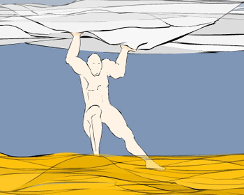

|

Pan Gu did not want the sky and earth to crash together again so he stretched as much as he could. He pushed the sky up with his hands and stamped the earth down with his feet. He stayed like this for many centuries until he was sure the sky and earth were solid enough not to fall together again. | |
| ...previous | next... |